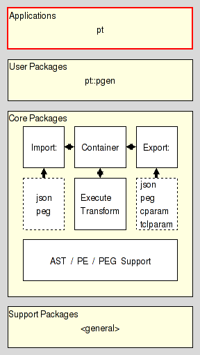
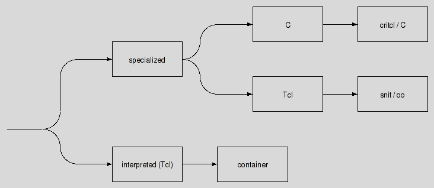
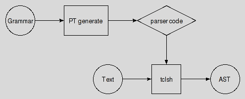
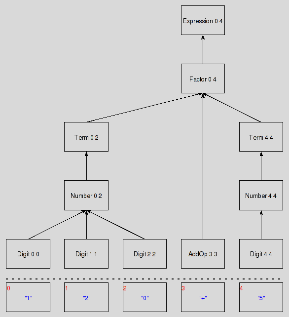

pt - Parser Tools Application
Are you lost ? Do you have trouble understanding this document ? In that case please read the overview provided by the Introduction to Parser Tools. This document is the entrypoint to the whole system the current package is a part of.
This document describes pt, the main application of the module, a parser generator. Its intended audience are people who wish to create a parser for some language of theirs. Should you wish to modify the application instead, please see the section about the application's Internals for the basic references.
It resides in the User Application Layer of Parser Tools.

This sub-command of the application reads the parsing expression grammar stored in the inputfile in the format inputformat, converts it to the resultformat under the direction of the (format-specific) set of options specified by the user and stores the result in the resultfile.
The inputfile has to exist, while the resultfile may be created, overwriting any pre-existing content of the file. Any missing directory in the path to the resultfile will be created as well.
The exact form of the result for, and the set of options supported by the known result-formats, are explained in the upcoming sections of this document, with the list below providing an index mapping between format name and its associated section. In alphabetical order:
A resultformat. See section C Parser.
A resultformat. See section Grammar Container.
A resultformat. See section C Parser Embedded In Tcl.
A input- and resultformat. See section JSON Grammar Exchange.
A resultformat. See section TclOO Parser.
A input- and resultformat. See section PEG Specification Language.
A resultformat. See section Snit Parser.
Of the seven possible results four are parsers outright (c, critcl, oo, and snit), one (container) provides code which can be used in conjunction with a generic parser (also known as a grammar interpreter), and the last two (json and peg) are doing double-duty as input formats, allowing the transformation of grammars for exchange, reformatting, and the like.
The created parsers fall into three categories:

The fastest parsers are created when using the result formats c and critcl. The first returns the raw C code for the parser, while the latter wraps it into a Tcl package using CriTcl.
This makes the latter much easier to use than the former. On the other hand, the former can be adapted to the users' requirements through a multitude of options, allowing for things like usage of the parser outside of a Tcl environment, something the critcl format doesn't support. As such the c format is meant for more advanced users, or users with special needs.
A disadvantage of all the parsers in this section is the need to run them through a C compiler to make them actually executable. This is not something everyone has the necessary tools for. The parsers in the next section are for people under such restrictions.
As the parsers in this section are implemented in Tcl they are quite a bit slower than anything from the previous section. On the other hand this allows them to be used in pure-Tcl environments, or in environments which allow only a limited set of binary packages. In the latter case it will be advantageous to lobby for the inclusion of the C-based runtime support (notes below) into the environment to reduce the impact of Tcl's on the speed of these parsers.
The relevant formats are snit and oo. Both place their result into a Tcl package containing a snit::type, or TclOO class respectively.
Of the supporting runtime, which is the package pt::rde, the user has to know nothing but that it does exist and that the parsers are dependent on it. Knowledge of the API exported by the runtime for the parsers' consumption is not required by the parsers' users.
The last category, grammar interpretation. This means that an interpreter for parsing expression grammars takes the description of the grammar to parse input for, and uses it guide the parsing process. This is the slowest of the available options, as the interpreter has to continually run through the configured grammar, whereas the specialized parsers of the previous sections have the relevant knowledge about the grammar baked into them.
The only places where using interpretation make sense is where the grammar for some input may be changed interactively by the user, as the interpretation allows for quick turnaround after each change, whereas the previous methods require the generation of a whole new parser, which is not as fast. On the other hand, wherever the grammar to use is fixed, the previous methods are much more advantageous as the time to generate the parser is minuscule compared to the time the parser code is in use.
The relevant result format is container. It (quickly) generates grammar descriptions (instead of a full parser) which match the API expected by ParserTools' grammar interpreter. The latter is provided by the package pt::peg::interp.
All the parsers generated by critcl, snit, and oo, and the grammar interpreter share a common API for access to the actual parsing functionality, making them all plug-compatible. It is described in the Parser API specification document.
peg, a language for the specification of parsing expression grammars is meant to be human readable, and writable as well, yet strict enough to allow its processing by machine. Like any computer language. It was defined to make writing the specification of a grammar easy, something the other formats found in the Parser Tools do not lend themselves too.
For either an introduction to or the formal specification of the language, please go and read the PEG Language Tutorial.
When used as a result-format this format supports the following options:
The json format for parsing expression grammars was written as a data exchange format not bound to Tcl. It was defined to allow the exchange of grammars with PackRat/PEG based parser generators for other languages.
For the formal specification of the JSON grammar exchange format, please go and read The JSON Grammar Exchange Format.
When used as a result-format this format supports the following options:
The critcl format is executable code, a parser for the grammar. It is a Tcl package with the actual parser implementation written in C and embedded in Tcl via the critcl package.
This result-format supports the following options:
The c format is executable code, a parser for the grammar. The parser implementation is written in C and can be tweaked to the users' needs through a multitude of options.
The critcl format, for example, is implemented as a canned configuration of these options on top of the generator for c.
This result-format supports the following options:
The snit format is executable code, a parser for the grammar. It is a Tcl package holding a snit::type, i.e. a class, whose instances are parsers for the input grammar.
This result-format supports the following options:
The oo format is executable code, a parser for the grammar. It is a Tcl package holding a TclOO class, whose instances are parsers for the input grammar.
This result-format supports the following options:
The container format is another form of describing parsing expression grammars. While data in this format is executable it does not constitute a parser for the grammar. It always has to be used in conjunction with the package pt::peg::interp, a grammar interpreter.
The format represents grammars by a snit::type, i.e. class, whose instances are API-compatible to the instances of the pt::peg::container package, and which are preloaded with the grammar in question.
This result-format supports the following options:
In this section we are working a complete example, starting with a PEG grammar and ending with running the parser generated from it over some input, following the outline shown in the figure below:

Our grammar, assumed to the stored in the file "calculator.peg" is
PEG calculator (Expression)
Digit <- '0'/'1'/'2'/'3'/'4'/'5'/'6'/'7'/'8'/'9' ;
Sign <- '-' / '+' ;
Number <- Sign? Digit+ ;
Expression <- Term (AddOp Term)* ;
MulOp <- '*' / '/' ;
Term <- Factor (MulOp Factor)* ;
AddOp <- '+'/'-' ;
Factor <- '(' Expression ')' / Number ;
END;
From this we create a snit-based parser via
pt generate snit calculator.tcl -class calculator -name calculator peg calculator.peg
which leaves us with the parser package and class written to the file "calculator.tcl". Assuming that this package is then properly installed in a place where Tcl can find it we can now use this class via a script like
package require calculator
lassign $argv input
set channel [open $input r]
set parser [calculator]
set ast [$parser parse $channel]
$parser destroy
close $channel
... now process the returned abstract syntax tree ...
where the abstract syntax tree stored in the variable will look like
set ast {Expression 0 4
{Factor 0 4
{Term 0 2
{Number 0 2
{Digit 0 0}
{Digit 1 1}
{Digit 2 2}
}
}
{AddOp 3 3}
{Term 4 4
{Number 4 4
{Digit 4 4}
}
}
}
}
assuming that the input file and channel contained the text
120+5
A more graphical representation of the tree would be

Regardless, at this point it is the user's responsibility to work with the tree to reach whatever goal she desires. I.e. analyze it, transform it, etc. The package pt::ast should be of help here, providing commands to walk such ASTs structures in various ways.
One important thing to note is that the parsers used here return a data structure representing the structure of the input per the grammar underlying the parser. There are no callbacks during the parsing process, i.e. no parsing actions, as most other parsers will have.
Going back to the last snippet of code, the execution of the parser for some input, note how the parser instance follows the specified Parser API.
This section is intended for users of the application which wish to modify or extend it. Users only interested in the generation of parsers can ignore it.
The main functionality of the application is encapsulated in the package pt::pgen. Please read it for more information.
This document, and the package it describes, will undoubtedly contain bugs and other problems. Please report such in the category pt of the Tcllib Trackers. Please also report any ideas for enhancements you may have for either package and/or documentation.
EBNF, LL(k), PEG, TDPL, context-free languages, expression, grammar, matching, parser, parsing expression, parsing expression grammar, push down automaton, recursive descent, state, top-down parsing languages, transducer
Parsing and Grammars
Copyright © 2009 Andreas Kupries <andreas_kupries@users.sourceforge.net>